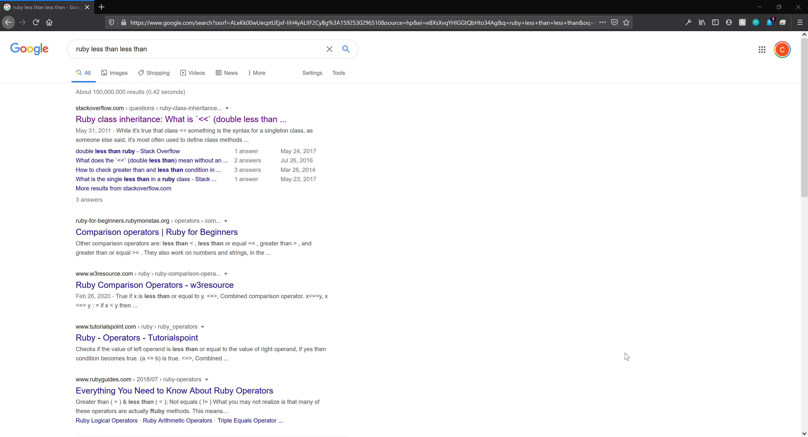
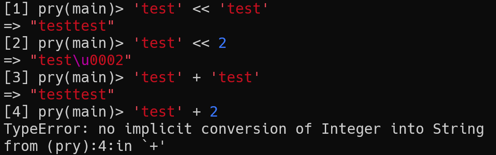

8 - Ruby's Less Than Less Than Operator
Published 2020-06-18In the immortal words of Gary Bernhardt, let's talk about Ruby.
Ruby
Ruby is a beautiful language. In many ways, Ruby is Rust before Rust was ever conceived of:
- Ruby learned from a lot of the mistakes of languages before it
- Ruby has a vibrant community, with a catchy, inclusive slogan: Matz (creator) is nice and so we are nice (MINASWAN)
- Ruby is very opinionated about its library structure, and includes a utility to make installing dependencies easy (
gem) - Ruby is "designed for programmer happiness"
However, we can't stretch the metaphor too far. Ruby is dynamic, interpolated, object oriented, and (relatively) slow. It makes up for that last point by being incredibly good for prototyping, much the same as Python. It also takes many of the best parts (regexes in particular) from Perl, which dominated the internet for a time.
The << operator
So Ruby's pretty awesome. But like every language, Ruby has warts, and you will see more of them the longer you look. I've been programming professionally (aka getting paid to write software) in Ruby for a little over 5 years now, and today I'd like to put one of my most frequent code review comments into a blog post I can point to.
Don't use the << operator in Ruby
Here's why:
some_variable << 'A string'
What is the type of some_variable, in this line? You could say, "Well, that's an array." 9 times out of 10, you'd be right. Suppose it is an array. There are valid reasons to stick something onto the end of an array. The most frequent usage I see:
arr = []
iterable.each do |element|
arr << element.foo
end
is also an anti-pattern (you can collapse it into a single line and run faster and use less memory with map: arr = iterable.map(&:foo)). But even supposing that this is one of those times, << is a bad idea for a couple of reasons:
<< is a bad idea because it's hard to pronounce
How do you say it in your head? In our above example, you can say "Some variable ...... a string".
What do we put there?
Gets, from C++'s cin.gets << var?
Dot push, since << is an alias (on Array) for .push?
Dot append, if you come from Python?
Less than less than, like I put as the title of this blog post?
Any of these are usable, but they're all compromises.
<< is a bad idea because it's hard to search
If you put ruby less than less than into google, you'll get a few semi-relevant stack overflow posts, followed by a bunch of stuff on comparison:

It's about the same on Duck Duck Go and slightly worse on Bing (the StackOverflows are down a few results).
<< is a bad idea because it requires context
This is probably the strongest argument against <<. If you ever get into compiler theory, you'll hear about context free grammars. If you look at the wikipedia article I linked, you'll see a beautiful formal definition with graphs, fancy symbols, and absolutely no way to understand it at all.
A context free grammar, in practical terms, is one where you can look at a line of code by itself and understand what it's doing. To be clear, most of the languages we use are not context-free. They are contextual. Even English is contextual. If I tell you, "Oh yeah, he went to the store," your first question will be "Who?" In this specific example, you need more information to fully understand that sentence.
In our earlier example:
some_variable << 'A string'
you need more information (more context) to know what the type of some_variable is, and what's actually being done on it. There are at least 4 different possibilities here:
some_variableis an array, and you want to add this element to the end of the array.some_variableis a string, and you want to concatenate this object to the end of it (yes, you can concat numbers to strings)some_variableis a CSV and you want to add a row to it.some_variableis an IO object, and you want to write to it.
This is not even including that you can open up an instance of a class to define methods on it with <<, which is possibly the only legitimate use for it, and the thing that comes up in those StackOverflow posts:
class << some_instance
def foo
puts 'why, though?'
end
end
# some_instance.foo
# => why, though?
# => nil
What do we do about it?
Use the full names of things!
If you want to add an element to an array, use Array#push. Not only is it more readable, pop is cleanly and obviously the opposite behavior. (Note: + on arrays does concatenation, and both arguments must be arrays)
If you want to concatenate two strings, use + or +=:

If you want to add a row to a CSV, use the appropriately named (though terribly documented) CSV#add_row.
If you want to write to an IO object (such as a file), use IO#write.
Summary
This was my first rant about Ruby, though I doubt it will be my last. Tune in next time for mutable strings (fixed in Ruby 3!), require 'English', and .present?. It will be a blast!